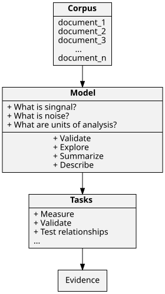

PWM-CS-HS3: Computational Social Science III: Computational Text Analysis for Social Science
Syllabus
Description
Social and political processes are often accompanied by a written text: from bureaucracies, parliament speeches, and print media to job advertisements and medical records. We can consider texts as traces as well as outcomes of such processes. The ever-increasing penetration of digital technologies into daily life dramatically multiplies volumes of available texts and opens new frontiers for social sciences. Advances in computer science (CS) and linguistics (CL) provide a wide range of tools to approach this mass of data and to look at social science questions from new angles. In this seminar, we will learn ways to ask research questions with text data and what tools are available to help us find the evidence. We will read and discuss research papers and book chapters. And we will practice using the most common tools by replicating published analyses.
Topics
- Introduction. Text as data: from close reading to content analysis and text mining.
- Making texts useful for research: preprocessing and models of text as data.
- Units of analysis: what can we measure and how; and when do we need humans to do it?
- Relying on text data in research design: classification, prediction, and clustering tasks.
- Topic modeling and the best practices for applying bleeding-edge tools from CS & CL in the context of social sciences.
Prerequisites
- Participants should be familiar with the basics of quantitative research (data analysis) and the R programming environment.
Software
- The latest version of
R: https://cran.r-project.org/ - The latest free version of
RStudio: https://www.rstudio.com/products/rstudio/download/ - Instead of
RStudio, it is possible to use other interactive development environments that supportRandUnicode1.
Learning objectives
- Understanding the basics of computational text analysis.
- Knowledge of how to build research design relying on text data.
- Knowledge of best practices for applying the latest methods from computer science and computational linguistics in the context of social science.
- Foundational skills in solving most common problems with text data in the R programming environment.
Grading
- Participants will get a grade for the course based on their paper (10 pages) developed during the semester. For code review, the grading principles are (1) evidence of independent work and (2) application of the best practices of reproducible research.
Language
- English.
Office hours
- By appointment.
Contacts
- sergei.pashakhin@uni-bamberg.de
- Sergei Pashakhin @ Uni-Bamberg
Acknowledgment
- This seminar's development is guided by my experience working on a text analysis class with Kirill Maslinsky. At times, I also draw on Kirill's publicly available code.
- Sergei Koltsov has taught me a lot about topic models, math and computer science.
Changelog
- : Week 2 is revised. Added links to resources and short notes.
- : Week 2 is adapted to our needs. Some cleaning of the web page.
- : Added weeks 1 and 2. The website is online.
Week 1
General introduction (course structure & requirements)
Winter Semester:
- We meet on Wednesdays at 14.15.
- The weekly schedule and materials will be appearing on this website.
Seminar paper
- Expected to be up to 10 pages long in the standard formatting.
- Consider linking the paper with your other papers on Computational Social Science.
- It could be a project or a review paper.
Grading papers and code
The necessary element are
- Evidence of independent work.
- Best practices of reproducible researcher 2.
Text as data: Qualitative and quantitative research strategies
History of relying on written text to answer social science questions
We have been using text data long before we started using computers. Examples:
- Philosophy
- Anthropology
- Archaeology
- History
- Literature Studies
- Digital humanities
Qualitative text analysis: how are we doing it still and why?
- Machines are still not enough.
Content analysis: where it all started where it is now?
What is 'computational'?
By 'computational' we usually mean something done with the use of computers. In this sense, computational text analysis is such an analysis that requires a computer to get a result. Today, it might seem strange to focus on this word but it serves to distinguish the types of task by their resources. For instance, close reading—a qualitative method—does not per se requires computers although it is hard to imagine that today. The same goes for content analysis, a method developed during the WWI. In principle, content analysis does not require a computer, you can do it using pen and paper. However, when the amounts of data become so large that one human or a small research group is unable to analyse it, we draw on the strength of computers. Thus, computational in our setting means to use computers for the heavy lifting in a project.
Text mining and why it is not computational text analysis
We have to distinguish between text mining and computational text analysis. You may think of these two as intersecting sets of tools, techniques, and approaches. The difference between the two is that text mining is a catch-all label from the industry (i.e. data science), while computational text analysis is associated more with efforts in academic science to use large amounts of text data for theory- and model-building. If the former usually focuses on the practical tasks, the latter aims to contribute to our understanding of how the world works. In this seminar, I will unravel the academic perspective.
Reading
Discussing on the next meeting:
- Grimmer, J., & Stewart, B. M. (2013). Text as Data: The Promise and Pitfalls of Automatic Content Analysis Methods for Political Texts. Political Analysis, 21(03), 267–297. https://doi.org/10.1093/pan/mps028
- Nguyen, D., Liakata, M., DeDeo, S., Eisenstein, J., Mimno, D., Tromble, R., & Winters, J. (2020). How We Do Things With Words: Analyzing Text as Social and Cultural Data. Frontiers in Artificial Intelligence, 3, 62. https://doi.org/10.3389/frai.2020.00062
Best practices of reproducible researcher (not discussing on the next meeting)
- Take a look at these papers2. Knowledge of these approaches will help you with your paper. It will help you to communicate and collaborate with people that come from computer science or program development. It is also helpful if you are planning on working in the industry.
Week 2
Is this data? Human languages and what they are good for
- Discussing the papers.
Making data out of texts
Models and approaches to utilising unstructured text
Raw text data or a collection of documents is not useful for to quantitatively test our hypotheses. To extract evidence from a collection of documents (we call it a corpus) we need to represent it in a formal way. In other words, we need a model of our corpus.
What is a model? For our purposes, by model we mean a set of assumptions about our corpus that define units of analysis, variables and the structure of data (in broad sense). Model of a corpus is a simplified but useful version of our raw text data. It is simplified because we make decisions about what information contained in the raw text data we will use to extract evidence, and what information we will discard. Thus, in CAT we have to explicitly define what is signal and what is noise. It is useful because our model provides us with data (givens) that we need for our research purposes. It is another explicit decision that we make to make data out of our text. Here is an example.
Imagine that we are studying internal email correspondence of a company or government agency. We have all emails sent and received by employees during a year. Our question is: what is the most persistent topic discussed by the employees?
Take a look at an example email (you can find it on your phone or computer). It has several elements:
date,sender,receiver,subjectandbody. What element of such a text file is most useful to answer our research question? Thebodyhas all the necessary information. However, messages vary greatly in their length and we do not have enough computing resources to use all the emails available to us to extract topic from the body. Thesubjectof the message is much shorter, and people tend to use it to signal the recipient what an email is about. Thesubjectis easier to use as it does not require much computational resources. Now, we make an explicit decision: discard everything from our data except for the subject and time. Next, we look at thesubjectelement closer. What are the most useful elements of asubjectstring that can help to answer our question? One obvious choice would be nouns. OK, how many nouns from the subject string should we use? Here, again, we have to make a decision: one noun may work for some cases but not for the most, should we use all nouns?By making such decisions we build a representation of or document collections as data. We can measure frequencies of nouns in the subject line and test which appear more often that others. This model will enable us to estimate what nous correlate with each other. Note, that this is something we cannot do without explicitly made assumptions about what is signal and what is noise in our data. We have the following model of our corpus:
date noun message id 2022-10-21 money 1 2022-10-21 debt 1 2022-10-22 default 2 2022-10-22 extortion 2 2022-10-23 suicide 3 2022-10-23 debt 3 2022-10-23 PR 3 2022-10-23 money 3
What are bags of words?
- A common and simple model of text is the bag-of-words model.
What else is there beside bags-of-words models?
- Large language models (LLMs)
- Word embedding
- Topic models
- Transformers i.e. BERT And much more.
Can you create an ad hoc model of text for your research?
- Yes, we did it in the example above about emails.
- But there are caveats that we will explore later.
Your computer and tools
Command Line Utilities
Text data usually is large data. For quick tasks such as glimpsing at the structure of your dataset or searching patters in the text it is much more efficient to use command line utilities.
Feeling intimidated by the command line is normal. Using command line is not so much different from using R: you type your commands and the output is printed out on your screen. When you know what you want do to, it is trivial to learn what you have to type. The benefit of learning at least a bit of command line workflow is speed and conviniece. This knowledge will enable you to understand better code written by other and to come up with creative solutions for varios task.
I am not saying that you have to study command line utilities right now. I am saying that this is an area of knowledge that can make positive impact on your work with computational projects and communication with people from computer scince and programming backgrounds.
Windows
- Cygwin allow to use Unix commad line tools on Windows machines.
MacOS
- Use the standart Terminal app. A better alternative is iTerm2.
- You can install tools missing on MacOs with Homebrew.
Linux
- If you are using Linux, you have most of the tools already at your disposal. They are either already installed or available in your repositories.
Tools worthy of your attention
- GNU Grep – match patterns of text (i.e. 'extract all years from a Wikipedia page').
- Linux Crash Course - The grep Command (YouTube)
- GNU Awk – manipulate text data in tabular format.
- Linux Crash Course - awk (YouTube)
- GNU Make – join together various tools and scripts into system for convenient and reproducible work.
- A blog GNU Make for Reproducible Data Analysis by Zach Jones
- Baker, P. (2020). Using GNU Make to Manage the Workflow of Data Analysis Projects. Journal of Statistical Software, 94(Code Snippet 1). https://doi.org/10.18637/jss.v094.c01
- Reproducibility with Make in the Turing Way handbook.
- ripgrep – a faster implementation of GNU Grep; could be used to search for text in a multitude of file formats (including PDF!)
- VisiData – allows you to quickly learn the structure of your dataset and explore it conveniently. This is much faster and better for your computer than using Microsoft Excel and R for such purposes with large datasets.
- An Introduction to VisiData by Jeremy Singer-Vine.
Programming languages and their ecosystems
If you are ablolutely new to R and RStudio, take a look at this book:
- Thomas M. Holbrook. An Introduction to Political and Social Data Analysis Using R. https://bookdown.org/tomholbrook12/bookdown-demo/
- Chapter 2 will help you to start.
- Then, take a look at the book:
- Leek, J. (2015). The Elements of Data Analytic Style. Leanpub. http://leanpub.com/datastyle
R: the primary sources for our practical work on the seminar
- Benoit, K., Watanabe, K., Wang, H., Nulty, P., Obeng, A., Müller, S., & Matsuo, A. (2018).
quanteda: An R package for the quantitative analysis of textual data. Journal of Open Source Software, 3(30), 774. https://doi.org/10.21105/joss.00774 - Silge, J., & Robinson, D. (2017). Text Mining with R: A Tidy Approach. O’Reilly Media. https://www.tidytextmining.com/
- Ashish, K., & Avinash, P. (2016). Master text-taming techniques and build effective text-processing applications with R. Packt Publishing. https://learning.oreilly.com/library/view/mastering-text-mining/9781783551811/
Reading for the next meeting
For discussion
- O’Connor, B., Bamman, D., & Smith, N. A. (n.d.). Computational Text Analysis for Social Science: Model Assumptions and Complexity. https://brenocon.com/oconnor+bamman+smith.nips2011css.text_analysis.pdf
R and data analysis:
- Leek, J. (2015). The Elements of Data Analytic Style. Leanpub. http://leanpub.com/datastyle
- Silge, J., & Robinson, D. (2016).
tidytext: Text Mining and Analysis Using Tidy Data Principles in R. The Journal of Open Source Software, 1(3), 37. https://doi.org/10.21105/joss.00037- Full scale introduction to the package: Silge, J., & Robinson, D. (2017). Text Mining with R: A Tidy Approach. O’Reilly Media. https://www.tidytextmining.com/
Practice
- Set up R and RStudio on your computer.
- Review the demo scripts (find it in your mail box).
- Solve problems presented in the script.
- Gather your troubles with code and bring them to me.
Where to find text data for fun and profit?
- Google Dataset Search.
- Harvard Dataverse.
- Consider to take a look at other Dataverse installations.
- Kaggle Datasets.
- "Data is Plural" archive – "a weekly newsletter of useful/curious datasets" by Jeremy Singer-Vine.
- Consider exploring category "Open data" on Wikipedia.
Week 3
Summarising what we learned so far
Last week we gathered our understanding of text-as-data that could be roughly presented in the following scheme.

Practice
Last week, in our demo we have encountered:
- Zipf's Law;
- Stopwords;
- Wide and long data;
- Stylometry with PCA.
This week, we will practice more and learn:
- Stemming and lemmatization;
- How to compare two corpora;
- Named entity recognition.
Footnotes:
- Wilson, G., Bryan, J., Cranston, K., Kitzes, J., Nederbragt, L., & Teal, T. K. (2017). Good enough practices in scientific computing. PLOS Computational Biology, 13(6), e1005510. https://doi.org/10.1371/journal.pcbi.1005510
- Fehr, J., Heiland, J., Himpe, C., & Saak, J. (2016). Best Practices for Replicability, Reproducibility and Reusability of Computer-Based Experiments Exemplified by Model Reduction Software. AIMS Mathematics, 1(3), 261–281. https://doi.org/10.3934/Math.2016.3.261